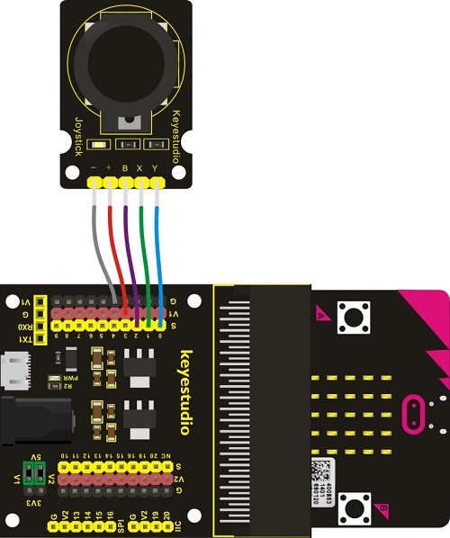

Piny II: Joystick
Potřebné součásti
- samozřejmě micro:bit
- rozšiřující deska
- modul joysticku (Keyestudio Joystick Module)
- propojovací vodiče (drátky) × 5
Fungování joysticku
Joystick obsahuje dva potenciometry: jeden měří vychýlení páky doleva a doprava (osa X), druhý nahoru a dolů (osa Y). Micro:bit z každého přečte číslo od 0 do 1023. Když je páka uprostřed, vychází přibližně 512. Čím víc páku vychýlíte, tím víc se číslo blíží k 0 nebo k 1023.
X = 512
Y = 512
prázdný displej
Ukázka se přehrává sama: páka se postupně vychyluje a displej micro:bitu ukazuje šipku. Malé zachvění kolem středu (hodnoty 362 až 662) se nebere v úvahu. Směry u vašeho modulu mohou být opačné, to zjistíte v úloze 1.
Zapojení joysticku k micro:bitu
Modul má pět vývodů: G (zem), V (napájení), B (tlačítko), X a Y (osy). Drátky zapojte takto:
| Vývod joysticku | Barva vodiče (drátku) | Pin na desce |
|---|---|---|
| G (zem) | šedý | G |
| V (napájení) | červený | V |
| B (tlačítko) | fialový | P2 (S) |
| X (vlevo/vpravo) | zelený | P1 (S) |
| Y (nahoru/dolů) | modrý | P0 (S) |

Úlohy
Úloha 1: ČíslaNaprogramujte micro:bit tak, aby na displeji ukazoval číslo přečtené z osy X. Zjistěte, jaké číslo vychází uprostřed, úplně vlevo a úplně vpravo. Pak totéž udělejte s osou Y. Zapište si, které číslo odpovídá kterému směru.
Úloha 2: ŠipkyNaprogramujte micro:bit tak, aby podle vychýlení páky ukázal na displeji šipku správným směrem (nahoru, dolů, doleva, doprava). Když je páka uprostřed, displej je prázdný. Zkuste najít takové hranice, aby joystick nereagoval na malé zachvění.
Úloha 3: TečkaNa displeji svítí jedna tečka. Pohybem joysticku ji posouvejte po displeji a hlídejte, aby nevyjela mimo (souřadnice jsou 0 až 4). Stisk páky tečku vrátí doprostřed.